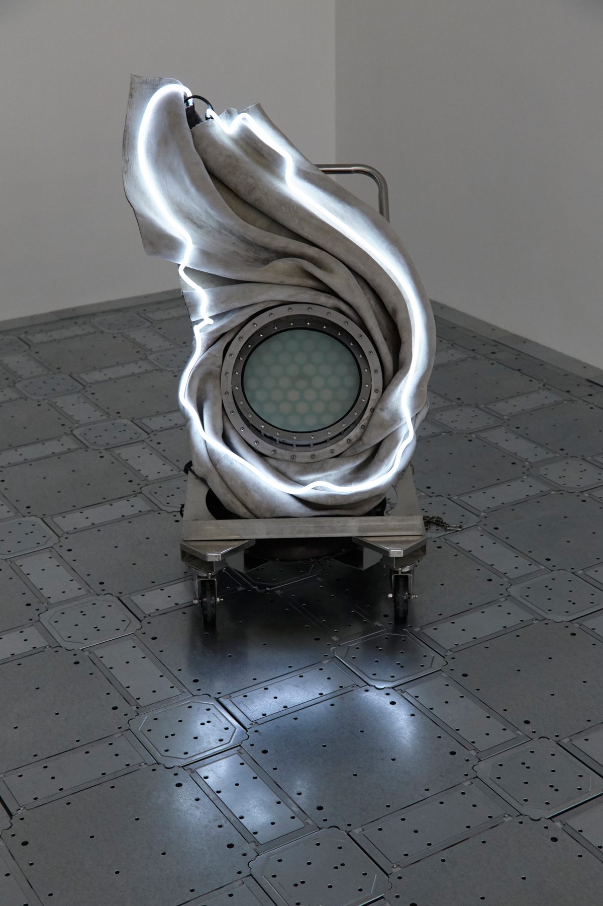
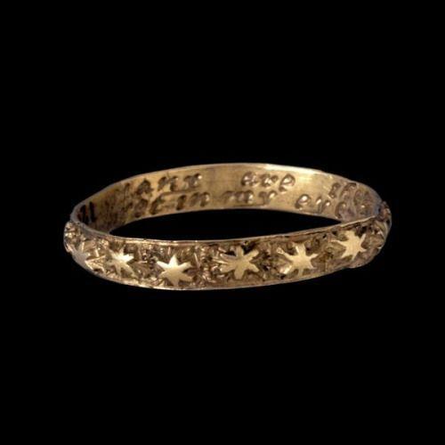

there's a lot I think I know about you. but it's taken me a long long time to learn.
maybe its presumptuous of me to even say how I see you,
maybe it will say more about me, than you.
we've spoken about it before, it takes me a while to learn a person. but when I do I learn them well. and I love them for it.
out of everyone I have ever met, it has taken me the longest to learn you. and i'm nowhere near done yet.
you're shareeka, you're akka, you're shasha, you're baby and you're so grown.
i know that you're kind. i know that you're discerning.
i know that you're really fucking smart. I know that the way you see the world is special.
i know that you're sensitive. i also know that you don't like to feel vulnerable. we have chats and you share something and then you say "I don't know what the point of saying that was" and I always want to say that there doesn't need to be a point you don't need a reason for your emotions to take up space but then I think maybe you know this and you're doing you and what do I know certainly not as much as you
i know that you're sexy. for you i know it is a power that goes hand in hand with anonymity.
i know that other people look up to you. i mean, i look up to you too, it's hard not to stargaze, you're so so bright.
but i know that that distance is isolating.
i know that i don't know you at all.
i know that i love you.
i know that i am so grateful you are on this earth